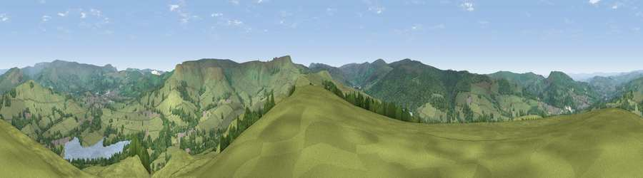

Viewpoint near Combs
#10523 in England · top 14% of its area beats it · near CombsWhere it is
The exact computed spot (SK 02775 78875). Click the marker for map links.
The view, rendered

A 360° render of this exact spot computed from the terrain model, tree cover and land cover — summer colours, afternoon light, calibrated against photographs of famous viewpoints. Real trees, hedges and buildings will differ in detail.
The panorama
Grey silhouette: terrain skyline in each direction (720 bearings, Earth curvature and refraction included). Dashed green: skyline with trees (+15 m) and buildings (+8 m) as obstacles. Blue strip: how far the ground is visible on each bearing.
Where the view opens
Wedge length = distance to the farthest visible ground on that bearing (vegetation-aware). Rings at 10, 25 and 50 km.
What fills the view
72% grassland · 22% woodland · 3% water · 2% built-up
Angular shares of the visible panorama (visual magnitude), not map area. Landscape diversity 0.33 (0–1 Shannon).
Key numbers
More beautiful places nearby
The staircase of upgrades: each row has a higher view potential than everything closer. Driving times are estimates from straight-line distance, calibrated against real road routing — check an actual route before setting out.
| Place | Direction | Drive | Score |
|---|---|---|---|
| Combs Head - North West Top | SSE · 3 km | ~7 min | 68.2 |
| Viewpoint near Kettleshulme | W · 3 km | ~8 min | 70.0 |
| Viewpoint near Kettleshulme | SW · 4 km | ~9 min | 72.5 |
| Cats Tor | SW · 4 km | ~10 min | 72.8 |
| Lord's Seat | ENE · 10 km | ~19 min | 73.1 |
| Viewpoint near Meerbrook | S · 15 km | ~27 min | 73.5 |
| Harrop Edge | NNW · 18 km | ~31 min | 74.6 |
| Wild Bank | NNW · 19 km | ~33 min | 76.2 |
53.30681, -1.95982 · source: screening · position refined by local search. Computed location — check access rights before visiting.